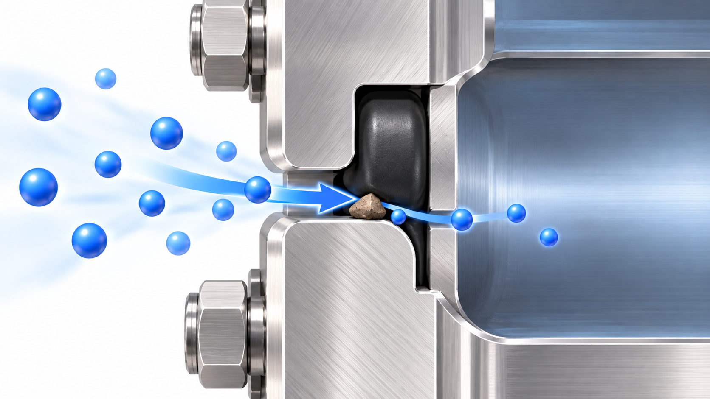
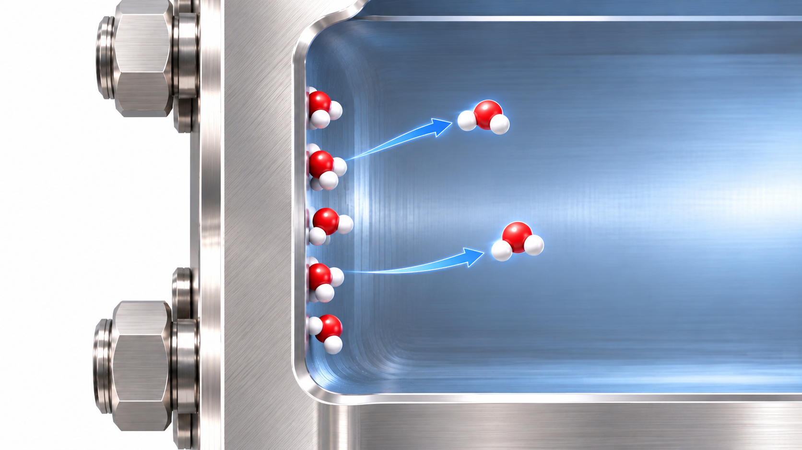
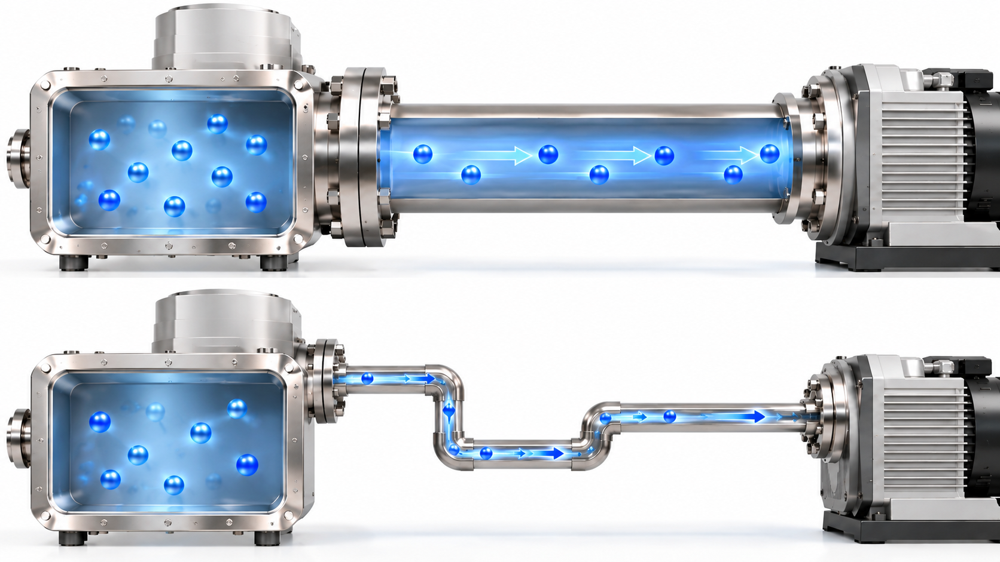
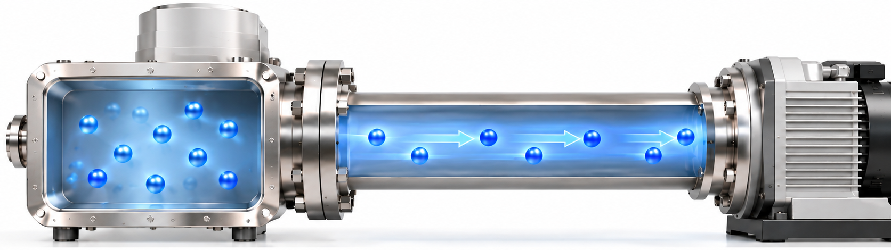
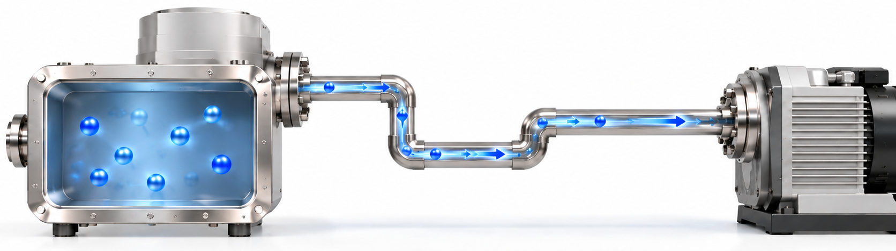
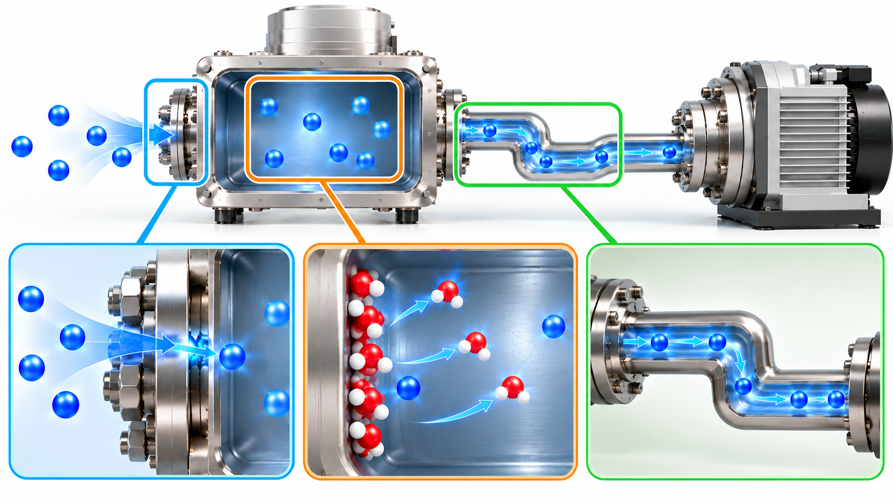
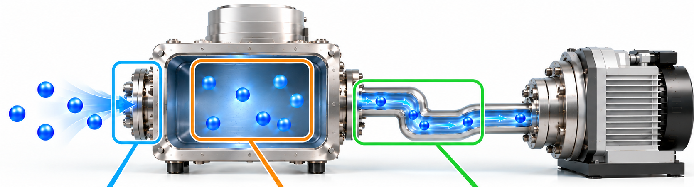
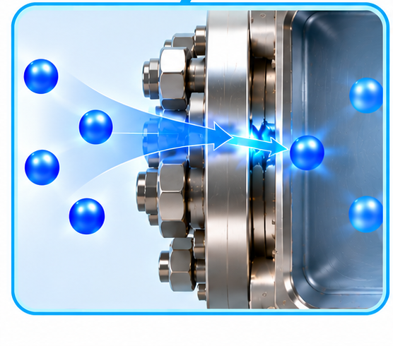
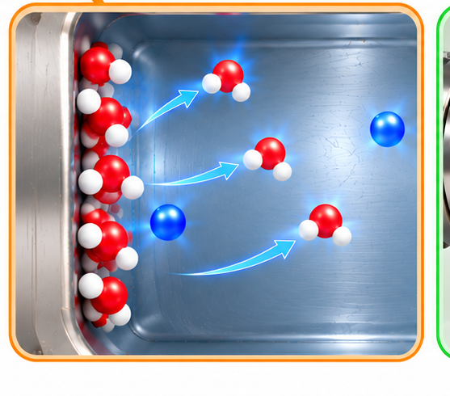
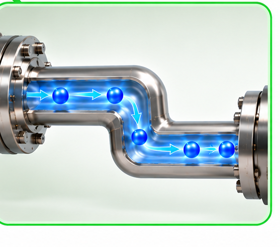

外から入る
すき間を通って気体が入る。→ リーク
「圧力が下がらない」は、ポンプの故障だけでは説明できません。気体の出入りをたどります。

ポンプは動いてるのに……圧力の数字が下がらない。
ポンプが動いていても、真空になりにくい原因がほかにあるのかな。
ありますよ。まずは「気体がどこから来て、どう出ていくか」を考えてみましょう。
すき間を通って気体が入る。→ リーク
壁や部品の表面などから気体が出る。→ 放出ガス
配管や弁などで気体が通りにくくなる。→ コンダクタンス
真空にならない原因は、ポンプだけとは限りません。

リークとは、外部から真空容器の中へ気体が入り込むことです。ポンプで気体を外へ出していても、外から気体が入り続けると圧力は下がりにくくなります。
原因は大きな穴だけではありません。シールの傷、ごみの噛み込み、締結不良、配管の接続部など、わずかなすき間が気体の入口になることがあります。
ほんの小さなすき間でも、外から気体が入ってくるんだね。

大気中では、真空容器の壁や部品の表面に水分などが付着しています。排気を始めると、それらが表面から離れて気体となり、ポンプはその気体も排気しなければなりません。これが放出ガスです。
大気開放したあと、洗浄したあと、部品を交換したあとなどは、いつもより排気に時間がかかることがあります。
漏れていなくても、中から気体が出てくることがあるんだ。
はい。特に表面に付着した水分などは、圧力が下がりにくくなる原因の一つです。
リーク＝外から。放出ガス＝内側の表面や材料から。



コンダクタンスとは、気体の「通りやすさ」を表す考え方です。一般に、太く短い配管は気体が通りやすく、細く長い配管は通りにくくなります。
ポンプの性能が高くても、途中の配管やバルブなどが気体の流れを妨げると、チャンバー側では十分な排気性能を得られないことがあります。
同じポンプでも、気体の通り道で排気のしやすさが変わるんだね。
いきなり原因を一つに決めつけず、まず表示と「直前に何が変わったか」を確認します。





真空計の表示・単位・測定範囲・エラーなどに異常がないか確認する。
装置を開けた？ 洗浄した？ 部品や配管を変更した？
リーク・放出ガス・コンダクタンスのどれが関係しそうか整理する。
Oリング、ごみ、締結などを確認。→ リークの可能性
表面から水分などが出ているかもしれない。→ 放出ガスの可能性
気体が通りにくくなっていないか確認。→ コンダクタンスの影響
「いつから」「何をしたあとから」「圧力がどう変化したか」が、原因を切り分ける手がかりです。
一つの状況だけで原因を断定することはできません。複数の原因が重なることもあります。
実際の点検・分解・弁操作は、装置の手順書と担当者の指示に従ってください。
シール部などから外の気体が入り込む。リーク
壁や部品の表面などから水分などが気体として出てくる。放出ガス
配管やバルブなどによって気体がポンプまで移動しにくくなる。コンダクタンス
「圧力が下がらない＝ポンプの故障」と決めつけず、気体がどこから来て、どう出ていくかを考えましょう。
3つの見方を使って、もっとも関係が深いものを選んでください。
真空をつくり、測り、保つ。次は、この工夫が暮らしや製造にどう役立つかを見てみましょう。